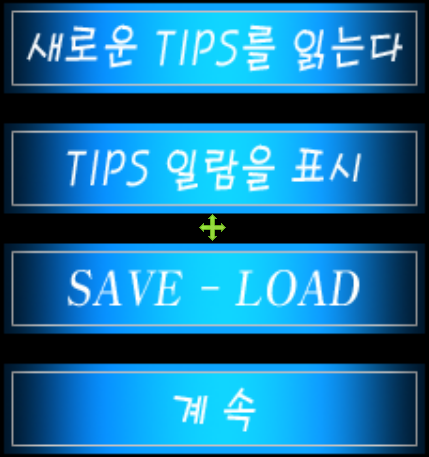
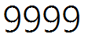
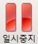
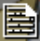

Settings.MoveMouseDelay = 0 running = True count = 0 scr1 = Screen(1) def runHotkey(event): global running running = False Env.addHotkey(Key.F1, KeyModifier.ALT, runHotkey) while(running): if (exists(, .5) and scr1.exists(Pattern().exact(), .5)): #If tip window shows up, wait wait(3) #Finding element in second screen scr1.doubleClick() type(Key.F7) exit() elif (exists(Pattern().similar(0.50), .5) or exists(Pattern().similar(0.55), .5) or exists() or count == 10): #Regular sequence wait(1.5 * count + 1) type(Key.ENTER) count = 0 else: count += 1 wait(1)